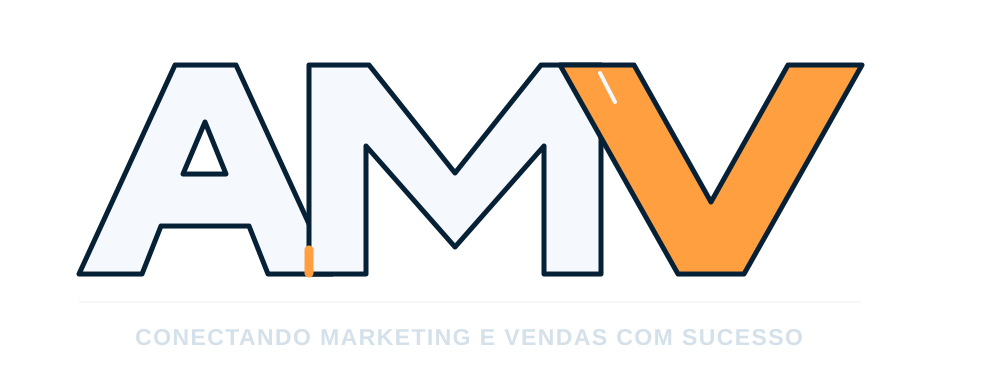
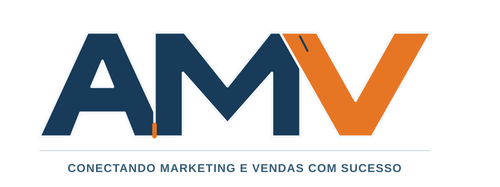

Aplicação em fundo escuro
PROPOSTA · MODO ESCURO

Aplicação em fundo claro
PROPOSTA · MODO CLARO

Este é um estudo visual: ele não substitui a logo do cabeçalho, da capa inicial ou do rodapé. Nenhum arquivo original foi sobrescrito.